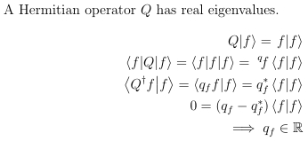

New Commands¶
\(\LaTeX\) allows users to specify new commands in order to make typing faster and easier to read. Examine the following blocks of code.
A Hermitian operator $Q$ has real eigenvalues.
\begin{align}
\left. Q \middle| f \right> = \left. f \middle| f \right> \\
\left< f \middle| Q \middle| f\right> = \left< f \middle| f \middle| f\right> =\; ^q\!f \left< f \middle| f \right> \\
\left< Q^\dagger f \middle| f \right> = \left< q_f f \middle| f \right> = q^\ast_f \left< f \middle| f \right> \\
0 = (q_f - q^\ast_f) \left< f \middle| f \right> \\
\implies q_f \in \mathbb{R}
\end{align}
This produces the following output.
By using \newcommand, the above code could be reduced to just the following:
A Hermitian operator $Q$ has real eigenvalues.
\begin{align}
\ket[Q]{f} = \ket[f]{f} \\
\brakett{f}{Q}{f} = \brakett{f}{f}{f} = \; ^q\!f \braket{f}{f} \\
\braket{Q^\dagger f}{f} = \braket{q_f f}{f} = q^\ast_f \braket{f}{f} \\
0 = (q_f - q^\ast_f) \braket{f}{f} \\
\implies q_f \in \R
\end{align}
The format of \newcommand is
\newcommand{cmd}[args]{def}
The cmd represents a command name beginning with a \ . The command must be unique, and cannot begin with \end. The arg represents an optional argument which can take any value from 1 to 9, so a command may take up to 9 arguments. The def represents the text substituted.
Zero Argument Commands¶
Ofttimes, it is easier to reduce a common symbol to a simple sequence than the full command. For real analysis, the symbols \(\mathbb{R}\) and \(\mathbb{Z}\) are common and it can be a chore to type (and remember) the commands \mathbb{R} and \mathbb{Z}. Since \R and \Z are not natively commands, the lengthy symbol calls can be assigned to these much shorter commands if the following two lines are included in the preamble.
\newcommand{\R}{\mathbb{R}}
\newcommand{\Z}{\mathbb{Z}}
Now, anywhere in the document, \R will be translated into \(\mathbb{R}\) and \Z will be translated into \(\mathbb{Z}\). A zero argument command can also be used for much longer items, such as the 3x3 identity matrix.
\newcommand{\imat}{\left(\begin{matrix}1&0&0\\0&1&0\\0&0&1\end{matrix}\right)}
Argument Commands¶
Besides making certain symbols easier to access, new commands can be used to make formatting easier. It can be a pain to type \left( and \right) every time it is desired to enclose something in parenthesis. Also, if one of the enclosures is left out then \(\LaTeX\) will thrown an error. The below line creates a command identical to the standard \frac command, except that it automatically places parenthesis around it.
\newcommand{\efrac}[2]{\left(\frac{#1}{#2}\right)}
With this command, the following two lines become identical.
\left(\frac{1}{x^2+1}\right)^2
\efrac{1}{x^2+1}^2
The new line is 12 characters shorter, and is easier to deal with than using enclosures the standard way. Also, to remove the enclosing parentheses, it is easier to change \efrac to \frac rather than search through a more complicated expression to find the matching left and right enclosures.
Optional Argument Commands¶
Sometimes there are two very related desired commands, with the only difference being that one requires an additional argument. For example, partial derivatives. Normally, typing out partial derivatives looks like this:
\frac{\partial x}{\partial y}
\frac{\partial^2 x}{\partial y^2}
One new command can make both of these expressions easier to type, even though one needs an exponent.
\newcommand{\parti}[3][{{}}]{\frac{\partial^#1 #2}{\partial #3^#1}}
\parti{x}{y}
\parti[2]{x}{y}
The optional argument is specified right after the number of arguments. Since no exponent is displayed for the first partial derivative, the optional argument for this command is [{{}}]. The two sets of curly braces tell \(\LaTeX\) that the argument is empty. If the second partial derivative was desired to be the default, then [{{}}] would be replaced with [2].
Another example would be the ket for quantum physics.
\newcommmand{\ket}[2][{{}}]{\left.#1\middle|#2\right>
That command allows the following two lines to be equivalent.
\left. Q \middle| f \right> = \left. f \middle| f \right>
\ket[Q]{f} = \ket[f]{f}
Looping Commands¶
It is recommended to read the sections on looping and logic before continuing.
\newcommand{\term}[2][x]{\ifnumless{1}{#2}{\frac{1}{#2!}(x-x')^{#2}f^{(#2)}}{\ifnumless{0}{#2}{(x-x')f^{(1)}(#1)}{f(#1)}}}
\newcommand{\taylor}[1][4]{f(x)\ifnumless{0}{#1}{\foreach\x in {1,...,#1}{+\term{\x}}}{}}
This produces the \taylor command, which writes out the Taylor polynomial of an arbitrary order. So the zeroth through fourth order taylor expansions about a point can be written with one line:
\foreach\x in {0,...,4}{\begin{equation}\taylor[\x]\end{equation}}